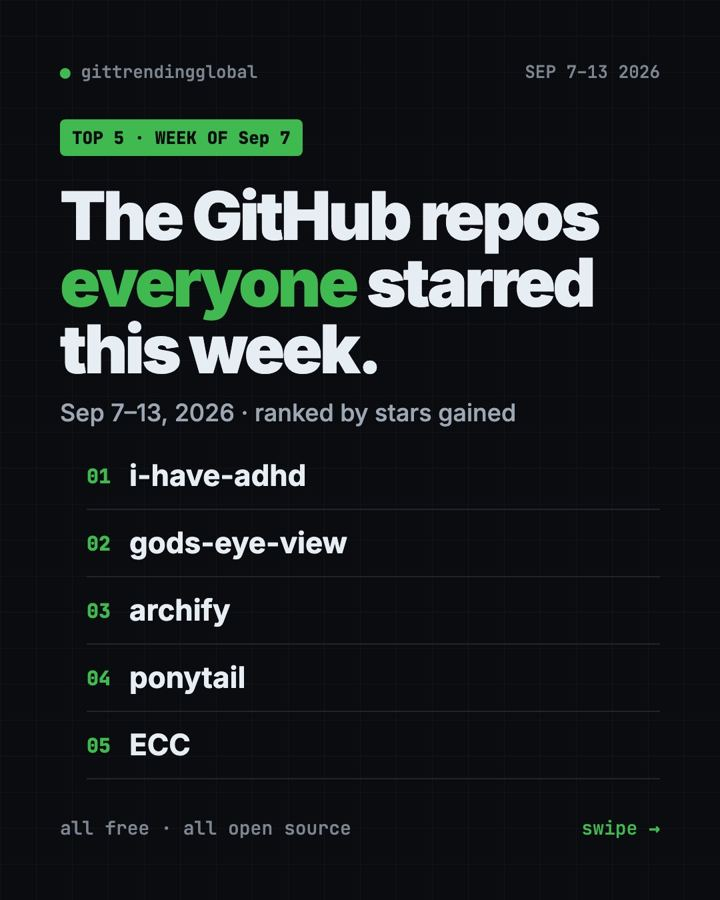

Home › Top repos › GitHub trending this week
GitHub Trending This Week, Sept 7 2026: i-have-adhd Wins
GitHub trending this week Sept 7 2026: i-have-adhd, God's Eye View's live 3D globe, Archify, Ponytail and ECC, with setup steps anyone can follow.

GitHub trending this week Sept 7 2026 had a funny winner: i-have-adhd, a skill that makes AI helpers give short, answer-first replies. It gained +15.9K stars. A live 3D globe of planes and satellites came second, and Archify held on for a third straight week.
If you've ever scrolled past five paragraphs of AI chatter to find the one line you needed, this week's top pick is for you. Here's the full top 5.
Key takeaways
- i-have-adhd led Sep 7 to 13 with +15.9K stars. It makes AI answers short and to the point.
- God's Eye View shows live flights, ships and satellites on a 3D globe in your browser.
- Archify and Ponytail stayed in the top 5 for another week.
- ECC is a giant settings-and-skills kit for Claude Code and other AI helpers.

GitHub trending this week Sept 7 2026: quick comparison
| Repo | What it does | Best for | Free? | Setup |
|---|---|---|---|---|
| i-have-adhd | Short, answer-first AI replies | Anyone who hates long AI answers | Yes (MIT) | Paste one line |
| God's Eye View | Live 3D globe of planes, ships, satellites | Map and space fans | Yes (MIT) | One click in Pinokio |
| Archify | Clickable diagrams from plain words | People who explain ideas | Yes (MIT) | One command |
| Ponytail | Less, simpler code from AI | People coding with AI | Yes (MIT) | Two lines |
| ECC | Skills, memory and safety rules for AI coders | Heavy Claude Code users | Yes (MIT) | Guided setup |
Star gains cover Sep 7 to 13, 2026. Totals were checked on GitHub on October 16, 2026.
1. i-have-adhd: answers first, fluff never
Stars: +15.9K this week · about 57.3K total
What it is: A skill for your AI coding helper. It stops the AI from burying the answer. You get the action first, then numbered steps, and no "Hope this helps!" The README adds that no ADHD diagnosis is needed.
Who it's for: Busy people, people with ADHD, and anyone who skims.
Everyday use: Ask how to fix an error. Instead of three paragraphs, you get the file, the line and the 3 steps.
Install it: The README's easiest way is to paste this into your AI helper's chat:
Install the i-have-adhd skill/plugin from https://github.com/ayghri/i-have-adhd, refer to the repo's AGENTS.md for instructions.
In Claude Code, you can also run these two lines in your terminal:
claude plugin marketplace add ayghri/i-have-adhd
claude plugin install i-have-adhd@i-have-adhd
Let Claude or Codex do it: the first block above is the prompt. Paste it and you're done.
2. God's Eye View: the whole world, live, on a globe
Stars: +10.5K this week · about 56.8K total
What it is: A 3D globe in your browser with live aircraft, ships, satellites, earthquakes and weather. Its README calls it a spy satellite simulator, except the data is real and public. You can click a plane and follow it.
Who it's for: Map lovers, plane spotters, space fans and teachers.
Everyday use: Track a friend's flight across the ocean in real time.
Install it: The one-click way is Pinokio, a free app that installs AI tools for you. Open God's Eye View in Pinokio, click Install, then Start. Prefer the terminal? You need Node.js 24 or 26:
git clone https://github.com/bilawalsidhu/gods-eye-view.git
cd gods-eye-view
npm ci
npm run doctor
npm run dev
Then open http://localhost:4173 in your browser.
Let Claude or Codex do it:
Install God's Eye View from github.com/bilawalsidhu/gods-eye-view without any API keys, open it, and show me how to follow a live flight.
3. Archify: three weeks and counting
Stars: +10.4K this week · about 84K total
What it is: A skill that turns a plain description into an interactive diagram. It topped the chart the week of Aug 31 and the week before that.
Who it's for: Anyone who explains how things work.
Everyday use: "Draw how a library book gets checked out and returned."
Install it:
npx skills add tt-a1i/archify -g
Let Claude or Codex do it:
Install Archify from github.com/tt-a1i/archify and draw how my team handles a customer complaint.
Full walkthrough: our Archify guide.

4. Ponytail: still keeping AI code short
Stars: +9.3K this week · about 164.3K total
What it is: A skill that pushes your AI coding helper to reuse what exists and write the least code that works.
Who it's for: Anyone tired of AI writing huge, messy code.
Everyday use: Ask for a small feature and get a few lines, not a new library.
Install it: In Claude Code, paste these one at a time:
/plugin marketplace add DietrichGebert/ponytail
/plugin install ponytail@ponytail
Let Claude or Codex do it:
Install Ponytail only from github.com/DietrichGebert/ponytail and show me which mode it's in.
More in our Ponytail guide.
5. ECC: a power kit for AI coding helpers
Stars: +8.1K this week · about 280.2K total
What it is: A big bundle of skills, memory, security rules and habits for Claude Code, Codex, OpenCode and others. It aims to make your AI helper faster and more careful.
Who it's for: People who use Claude Code every day and want more out of it.
Everyday use: Get ready-made commands for planning, reviewing and testing, instead of writing your own prompts.
Install it: You need Node.js 18+, Git and Claude Code 2.1+. Copy and paste this:
npx ecc-universal@2.2.3 setup
Let Claude or Codex do it:
Install ECC from github.com/affaan-m/ECC with the guided setup, explain each choice, and show me 3 beginner commands.
Read our ECC guide for the full setup.
Which one should you try first?
- You hate long AI answers: start with i-have-adhd. One paste.
- You want something fun to show friends: open God's Eye View.
- You explain things: add Archify.
- You code with AI: add Ponytail, then try ECC if you want everything.
💡 Tip: i-have-adhd and Ponytail work well together. One trims the talk, the other trims the code.
⚠️ Heads up: God's Eye View works with no keys, but photoreal 3D cities need a free Cesium ion token or a metered Google Maps key. Voice control uses OpenAI, which is paid.
See the month in our top 5 GitHub repos of September 2026 and September 2026 in AI. Next: the week of Sept 14.
FAQ
What was on GitHub trending this week Sept 7 2026?
i-have-adhd (+15.9K stars), God's Eye View (+10.5K), Archify (+10.4K), Ponytail (+9.3K) and ECC (+8.1K).
Do I need ADHD to use i-have-adhd?
No. The README says no diagnosis is needed. It just makes AI replies shorter and clearer.
Is God's Eye View free?
Yes. It's open source, and flights, satellites and earthquakes work with no account. A few extras use paid services.
Can I use these with ChatGPT?
These skills are made for coding helpers like Claude Code and Codex. God's Eye View runs in any browser.
Want one new free tool explained every day? Follow @gittrendingglobal on Instagram.
Keep reading

Trending GitHub Repos October 2026: The Top 5 So Far
The trending GitHub repos of October 2026 so far: a free Photoshop-style editor, an AI art studio, a big AI model for gaming PCs and more, explained.

Trending GitHub Repos This Week, Oct 5 2026: The Top 5
Trending GitHub repos this week Oct 5 2026: Matt Pocock's skills, the openGym workout tracker, e2e testing, HyperFrames video and claude-mem memory.

GitHub Trending September 28, 2026: VoiceStudio Takes #1
GitHub trending September 28 2026: VoiceStudio, Hindsight, Paperclip, NVIDIA's OpenShell and a free 542-lesson AI course, with setup steps for each.